The catenary is given by the Cartesian equation:
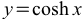It can also be expressed in terms of exponential function:
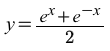Another representation is:
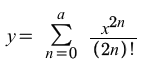where a is equal to infinity.
It can be parametrized to give:
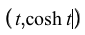The tangent vector is:
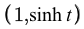The norm of the tangent vector is:
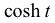The unit tangent vector is:
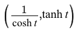The normal vector is:
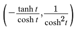The norm of the normal vector is:
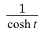The unit normal vector is:
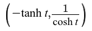The curvature is:
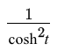The arc length of the catenary over the interval 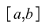 is:
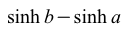The arc length function is:
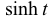The arc-length parametrization of the catenary is:
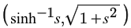Visualization of vectors on the catenary:
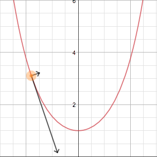